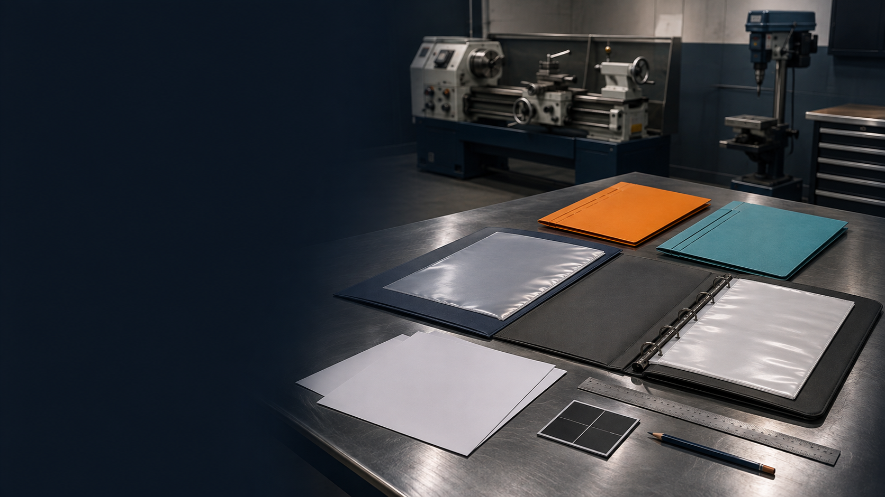

1. Read and inspect
Use the supplied programs, briefs and teacher-issued references for the current project.
Stage 5 · Industrial Technology - Metal
Advance from general metalwork into fabrication and machining through the BBQ and Case and Folding Camping Shovel projects, with guided theory and evidence at every stage.

Stage 5 Industrial Technology – Metal
This course follows the current Year 10 assessment sequence through the BBQ and Case and Folding Camping Shovel projects.
How the course works
Use the same calm routine across fabrication and machining learning.
Use the supplied programs, briefs and teacher-issued references for the current project.
Complete the checks and use feedback to correct misunderstandings.
Connect theory to fabrication, machining, planning and evaluation decisions.
Keep written explanations and the 12-part folio, then print clean PDF evidence.
Student evidence. Checks, written explanations and the folio autosave in this browser. Exact dimensions, setups, drawings, SOPs and practical directions remain teacher-controlled.
Progressive guided learning
Nine two-week modules align the learning pathway with the Term 2 Week 8 formal task point.
Project purpose, evidence expectations, approved materials and prior learning.
Open module →Communicating ideas, marking RHS, parallel setup and quality checkpoints.
Open module →Joining decisions, tack-and-check thinking, fusion and GMAW context.
Open module →Work Method Statements, sequencing, jigs and controlled repetition.
Open module →Cutting lists, costing, inputs/processes/outputs and specialist language.
Open module →Industrial production, CNC research, material efficiency and impacts.
Open module →Joining revision, surface preparation, finish selection and report evidence.
Open module →Sheet-metal developments, accuracy, hinging context and construction checks.
Open module →Handle problem solving, project report, PMI and evidence-based evaluation.
Open module →Progressive guided learning
Five two-week modules align the second formal project with the Term 3 Week 10 task point.
Project requirements, approved design changes, job plans and folio structure.
Open module →Risk management, Safe Operating Procedures and controlled project planning.
Open module →Material properties, cutting lists, forming and industrial stamping comparison.
Open module →Clearance/interference fits, lathe work, internal/external threads and CNC context.
Open module →Milling and drilling decisions, speed calculations, quality, finish and final evidence.
Open module →Keep each project’s brief, WHS, planning, production, quality and evaluation evidence distinct.
Open folio →Syllabus outcomes
The supplied Metal 1 and Metal Machining 2 programs provide opportunities to develop the ten Stage 5 outcomes. Teacher observation and the formal task notice determine the evidence used for assessment.
2026 formal assessment
BBQ and Case · Term 2, Week 8.
Open formal notice →Folding Camping Shovel · Term 3, Week 10.
Open formal notice →Whole course · Term 4, Week 3.
Open formal notice →Core resources
These control exact dimensions, project geometry, machine setup and practical processes.
Five verified concept clips linked to named theory, each with a student watch-for prompt and non-embed fallback.
Open YouTube learning →Twelve progressive evidence cards with browser autosave and Print / Save PDF.
Open folio →Password-controlled formal paper with autosave, relock and printable evidence.
Open exam →Editable program, scope and sequence, rendered PDF and the shared Stage 5 alignment register.
Open Teacher Resources →